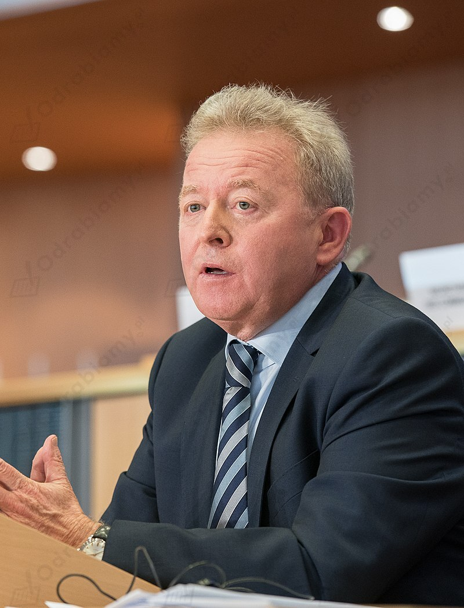
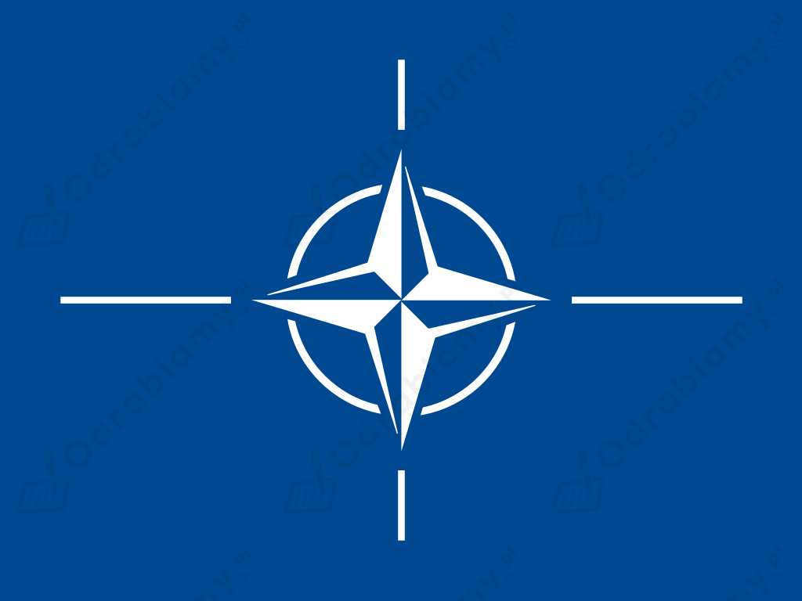

Stan na 1 września 2022 r.
Janusz Wojciechowski od 2019 r. pełni funkcję Europejskiego Komisarza ds. Rolnictwa i Rozwoju Wsi.

Janusz Wojciechowski, źródło zdjęcia: Wikimedia Commons.
Korzyści wynikające z przystąpienia Polski do NATO to np.:

Flaga NATO, źródło grafiki: Wikimedia Commons.
Proces integracji Polski z Unią Europejską był trudny i czasochłonny. Po latach zniewolenia (okres PRL) gospodarka oraz struktury państwa wymagały naprawy, przebudowy i unowocześnienia. W grudniu 1991 r. Polska podpisała układ stowarzyszeniowy ze Wspólnotami Europejskimi. Jednak dopiero w 1997 r. Rada Europejska podjęła decyzję o rozpoczęciu negocjacji z sześcioma państwami aspirującymi do UE, w tym Polski. W kwietniu 2003 r. podpisano w Atenach traktat akcesyjny, rozszerzający struktury Unii m.in. o Polskę. W tym samym roku odbyło się w naszym kraju referendum. Do poparcia integracji nawoływali nie tylko politycy, ale również Kościół katolicki (w tym ówczesny papież Jan Paweł II). Za przyjęciem Polski do UE opowiedziało się 77% głosujących. 1 maja 2004 r. III RP została członkiem Unii Europejskiej.
Polska jako państwo członkowskie zyskała możliwość wpływania na kształt decyzji podejmowanych na forum UE. Wejście Polski do UE skutkowało ekonomicznymi i społecznymi zmianami (np. gwałtowny wzrost emigracji zarobkowej). W 2007 r. państwo polskie przystąpiło do układu z Schengen. W latach 2007-2013 Polska była największym beneficjentem netto budżetu UE w perspektywie finansowej.
Wskazówki do rozwiązania zadania:
Inwestycje współfinansowane z funduszy Unii Europejskiej w:
a) Warszawie to np. budowa II linii metra i zakup nowoczesnego taboru, Centrum Nauki Kopernik, Bulwary wiślane,
b) Gdańsku to np. przebudowa ulicy Łostowickiej, budowa siedziby Gdańskiego Teatru Szekspirowskiego w Gdańsku, Budowa Europejskiego Centrum Solidarności w Gdańsku,
c) Poznaniu to np. budowa nowej linii tramwajowej przez most św. Rocha w Poznaniu, tramwaj z os. Lecha na Franowo i najnowocześniejsza zajezdnia, Muzeum Enigmy w Poznaniu,
d) Krakowie to np. Wawel, Muzeum Inżynierii Miejskiej, ICE Kraków,
e) Lublinie, to np. Muzeum Historii Miasta Lublina, renowacja Bazyliki Ojców Dominikanów w Lublinie.
Więcej przykładów inwestycji współfinansowanych z funduszy Europejskich znajdziesz na stronie internetowej: www.mapadotacji.gov.pl